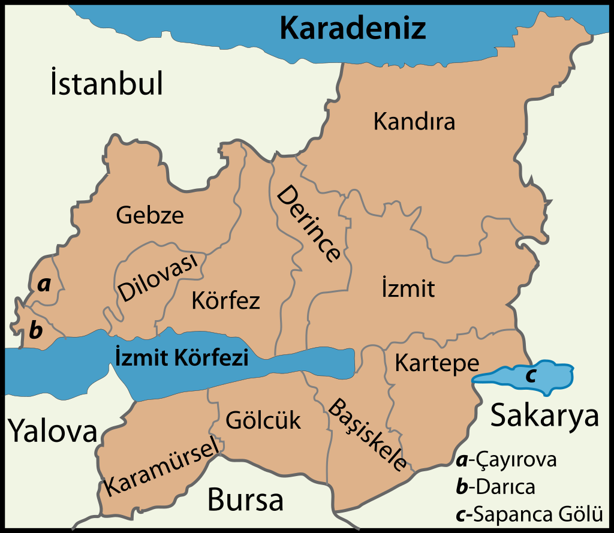

Şehrim
Haydi biraz Kocaeli'yi Tanıyalım
- Kocaeli, Türkiye'nin bir ili ve en kalabalık onuncu şehridir. Şehir, ülkenin en önemli sanayi ve ticaret kentlerinden biridir. Kocaeli; SEGE-2011 sıralamasına göre İstanbul, Ankara, İzmir ve Bursa'dan sonra en gelişmiş şehirdir. 2023 sonu itibarıyla 2.102.907 kişilik nüfusa sahiptir. Nüfus bakımından İstanbul ve Bursa'dan sonra Marmara Bölgesi'nin üçüncü büyük ilidir. Adını 1320 yılında İzmit yöresini fetheden Akça Koca'dan almaktadır. İstanbul, Bursa, Sakarya, Yalova illeriyle komşudur.
- Asya ile Avrupa kıtaları arasında önemli kara ve demiryolu güzergâhlarının kesiştiği bir yerde kurulan Kocaeli, bugün Marmara Bölgesi'nin ve yurdumuzun en önemli endüstri ve sanayi yerleşimlerinden biridir. Kocaeli’nin tarihi çok daha eski çağlara uzanır. İlk çağlarda, Bithynia adı verilen bölgede kurulan kentler, sırasıyla, Olbia, Astakos, Nicomedia, İznikmid, İzmid ve Kocaeli adlarını almıştır. Trakya'dan gelen Megaralılar M.Ö. 712'de İzmit Körfezi'nin güneyindeki Başiskele yöresine yerleşerek Astakos adı verilen bir kent kurdular. Astakos halkı M.Ö. 262 yılında, bugünkü İzmit’in bulunduğu alanda kurulan bölgeye yerleşmiştir. Bitinya Krallığı'nın yıkılıncaya kadar başkenti kalacak bu kente, kurucusundan dolayı Nicomedia adı verilir.
- Kocaeli, Osman Bey ve oğlu Orhan Bey’in uç beylerinden Akçakoca tarafından 1337 yılında Osmanlı topraklarına katıldı. Nikomedya Osmanlı egemenliğine geçtikten sonra, önce İznikmid, daha sonra İzmid (İzmit) adını almıştır. Şehir en parlak dönemine Kanuni Sultan Süleyman zamanında ulaştı. 19. yüzyılda İstanbul-İzmit arasında işleyen ve 1873 yılından itibaren de Haydarpaşa-Ankara güzergâhında faaliyet gösteren demiryolunun kente ulaşmasından sonra Kocaeli’nin ticari ve sosyal yaşamı canlanmaya başladı. Kent, 1888 yılında bağımsız sancak oldu ve ismi İzmit olarak değiştirildi. Daha sonra bölgeye fatihi Akçakoca'dan dolayı Akçakoca’nın yurdu manâsına gelen ‘KOCAELİ’ adı verildi.
- Kocaeli ili, Marmara Bölgesi'nin Çatalca–Kocaeli Bölümü'nde, 29° 22'—30° 21' doğu boylamı, 40° 31'—41° 13' kuzey enlemi arasında yer alır. Doğu ve güneydoğusunda Sakarya, güneyinde Bursa illeri, batısında Yalova ili, İzmit Körfezi, Marmara Denizi ve İstanbul ili, kuzeyde de Karadeniz'le çevrilidir. İl merkezi İzmit'in doğusundan geçen 30° doğu boylamı Türkiye saati için esas kabul edilir. Kocaeli ilinin yüzölçümü 3.397 km²'dir. Yüzölçümü bakımından Türkiye'nin en küçük 7. ilidir. Asya ile Avrupa'yı birleştiren önemli bir yol kavşağında bulunmaktadır. Doğal bir liman olan İzmit Körfezi işlek bir deniz yoludur. İlin kuzeybatı yüzündeki İstanbul il sınırı, Darıca ile İstanbul arasında akan Kemiklidere'nin doğusundan geçer. Güneybatıda İstanbul–Kocaeli sınırı İzmit Körfezi'nin karşı kıyısında Yalova topraklarıyla son bulur. Bursa sınırını Samanlı Dağları'nın tepelerinden geçen hat oluşturmaktadır. Bu sınır ilin güneydoğusunda Sapanca gölü kıyısından Sakarya iline dayanır.
- 
Genel Bakış
Tarihçe
İsim
Coğrafya
Harita
Hereke Kalesi
Körfeze açılan kapı.
Ballıkayalar Tabiat Parkı
Saklı bir cennet.
Çoban Mustafapaşa Camii
Geçmişin günümüze kültürel taşınımı.
Yuvacık Barajı
En temel kaynağımızın geldiği ev.
Hereke Kalesi
İzmit'in fethi sırasında İzmit'ten kaçanlar Hereke Kalesi'ne sığınır ve durumu öğrenen Orhan Gazi, Ali Bey'i başbuğ olarak görevlendirir ve Ali Bey kaleyi alır. 1326 yılında Hereke Kalesi Osmanlı Beyliğine bağlanmıştır. Hereke, Sultan II.Beyazıt döneminde büyük bir deprem yaşadı ve 45 gün devam eden deprem sonrasında kale tamamen ortadan kalktı. Evliya Çelebi'nin Seyahatnamesi'nde de bahsedilen 1400 yıllık tarihi olan kalenin restorasyonuna 2017 yılında başlanmıştır. Kalenin restorasyonu 2023 yılında tamamlandı.
Ballıkayalar Tabiat Parkı
Ballıkayalar, Kocaeli'nin Gebze ilçesi Tavşanlı köyü yakınlarında kayalık kanyon vadidir. Tabiat parkı statüsündedir. Eski zamanlarda yüksekteki kaya boşlukları kovan yeri olarak kullanıldığından Ballı Mağaralar, Bal Mağaraları, Bal Kayaları isimleri kullanılmış, en son Ballı Kayalar adını almıştır. 40–80 m arasında değişen uzunluk ve yaklaşık 2 km uzunluğa sahip bir vadidir. Vadiyi Ballıkaya Deresi oluşturmuştur. Dere şelaleler ve suların göllendiği dev kazanları oluşturmuştur. Orta Trias yaşlı kireçtaşları 200 milyon yıl içinde akarsular tarafından işlenerek kanyon vadi oluşmuştur. Kanyon vadi, şelale, devkazanları, mağaralar, kovuklar, bitki örtüsü parkın ana değerlerini oluşturur. İzmit Körfezinin 6,5 km kuzeyinde yer alır. En yüksek noktaları Topluca Tepe (280 m) ve Düzmeşe Tepe'dir (224 m). Büyüklüğü 6.029,73 dekardır. Doğal bitki örtüsünü, çalılık, baltalık meşe, psödomaki ve makiler oluşturur. Türkiye'de kaya tırmanışı sporunun başladığı yerdir. Tırmanış yapılan rotalar ilk olarak 1970'li yıllarda açılmıştır. İstanbul'a yakınlığı nedeniyle, tırmanışçılar buraya rağbet ederler. Vadinin kuzey-güney doğrultusunda olması nedeniyle, günün farklı saatlerinde bazı kayalar gölgede kalır. Böylece tırmanışçılar sıcak günlerde bile rahat tırmanma imkânı bulur. Tırmanışçılar dışında Ballıkayalar piknikçilerin de rağbet ettiği bir parktır. Ayrıca yüzme sporu için müsait olan tatlı su gölcüğü bulunan bölgede kaya atlayışı da yapılır. İstanbul'a 50 km, Gebze'ye 10 km uzaklıktadır.
Çoban Mustafapaşa Camii
Çoban Mustafa Paşa Külliyesi, 16. yüzyılda Kocaeli'nin Gebze ilçe merkezinde, Bağdat Caddesi, Şeftali Sokak'ta yer alan, kesin olmamakla birlikte Mimar Sinan tarafından inşa edilmiş bir Osmanlı külliyesidir. Külliye, Yavuz Sultan Selim’in kızı ve I. Süleyman' ın kardeşi Hafsa Sultan'la evli olan Çoban Mustafa Paşa tarafından yaptırılmıştır. Cami, türbe, medrese, tekke, kütüphane, imaret, dârüşşifâ, paşa odaları, kervansaray ile çarşı içerisindeki hamamdan oluşan külliye; Anadolu’dan geçen kervanlar, hacı adayları ve doğuya yapılan seferlerde ordunun buradan geçmesi nedeniyle büyük bir alana kuruldu. 2012 yılında başlayan restorasyonun tamamlanmasıyla cami, 02.01.2015 tarihinde yeniden ibadete açıldı.
Yuvacık Barajı
Yuvacık Barajı iki büyük derenin birleştiği vadide, Yuvacık Beldesi yakınlarında inşa edilmiştir. Baraj yapımı öncesi derelerin kenarlarındaki alabalık çiftlikleri ve doğal ortamları ilgi çekerken, daha sonra baraj gölünün çevresiyle oluşturduğu güzellikler görülmeye değer hale gelmiştir. Körfez ve İzmit manzarası eşliğinde çıkmaya başlayacağınız tepelerden birkaç köy geçtikten sonra Yuvacık'tan yürüyerek 1 saat mesafedeki Aytepe Köyü'ne ulaşılmaktadır.
Mirasımız
Günün Tatlısı - Pişmaniye
- Pişmaniye (Osmanlıca:Peşmîne) veya diğer adlarıyla pişmani, helvâ-yı kettân, peşîmânî helvâ, tel helva, çekme helva, tel tel, tepme helva, keten helva; Anadolu'da beyaz şeker, buğday unu, tereyağı, bitkisel margarin ile yapılan geleneksel bir tatlı türüdür. Anadolu'nun hemen her yöresinde bulunmakla beraber Kocaeli ilinde yapılan şekli ün kazanmıştır; çok miktarda üretilip satıldığı için Kocaeli ilinde bulunan İzmit kentine özgü yiyeceklerden sayılmış ve 2010 yılında ‘İzmit Pişmaniyesi’ olarak ‘Coğrafi Tescil Belgesi’ alınmıştır. Eskişehir bölgesinde ‘tel tel’, Kastamonu' da "çekme" ya da "çekme helvası" olarak bilinmektedir. "Peşmek", "tel helva", "keten helva"ve "çekme helva", pişmaniyenin farklı şekillerde piyasaya sunulan türleridir.
- Tatlının kökeni İran coğrafyasına dayanır. Görünüşü koyun yününe benzediği için yün gibi anlamına gelen peşmek (پشمک) kelimesinin zamanla Türkçede "pişmaniye" diye söylenmeye başlandığı muhtemeldir. Peşmîne aynı zamanda Osmanlıda yünden ve kıldan yapılan bir nevi kumaş adıdır. Bir Ziyafet Defteri adlı eserde Sultan Bayezid ve Sultan Cihangir’in sünnet düğününde verilen tatlılar listesinde peşmîne de geçmektedir. Lâmiî Çelebi’nin Ferhâd ile Şîrîn Mesnevîsinde adı geçen tatlılardan biridir. Anadolu'ya nasıl dağıldığı konusunda kesin bir bilgi bulunmamaktadır. Evlerde yapılan bir tatlı olan pişmaniye zamanla yaygınlaşıp sarayda da yapılmaya başlamıştır. Pişmaniyenin bir türü olan çekme helva, 1800'lü yıllarda Kastamonu'da üretilmeye başladı. Kocaeli'de pişmaniye ustası olarak bilinen ilk kişinin Kandıralı Hayrettin Usta olduğu söylenir. Kocaeli çevresine yaşayan Ermenilerden Şekerci Hacı Agop Dolmacıyan, pişmaniye yapımının Hayrettin Usta'dan öğrendikten sonra İzmit pişmaniyesinin pazara yönelik üretimini başlattı. I. Dünya Savaşı'nın ardından Dolmacıyan şekerci dükkanını kapatıp göçmüştür ancak pişmaniyenin inceliklerini ondan öğrenmiş olan İzmit Muhasebe Başkâtipliği’nde görevli İbrahim Ethem Efendi (Soyadı Kanunu'ndan sonra Çınar soyadını almıştır),Kapanönü semtinde bir şekerci dükkânı açarak pişmaniye üretiminin devam etmesini sağladı. Dolmacıyan'ın çocuklarına Türkçe ve Fransızca öğretmek üzere dükkanında çalışmış bulunan İbrahim Ethem Efendi'nin, Kapanönü'ndeki imalathanesinde birçok pişmaniye ustası yetişti. Pişmaniyenin ilk standardı, TSE 8787 ile 1987 yılında TSE’ne geçti. 2009 yılında İzmit'te "Uluslararası Pişmaniye Festivali" düzenlenmeye başladı. Bu festivalde, Guinness Rekorlar Kitabı'na girmesi için 1040 metre uzunluğunda pişmaniye çekimi yapıldı. İzmit pişmaniye üreticilerinin 1040 metre pişmaniyeyi çekmesi sonucu pişmaniye ‘Dünyanın En Uzun Tatlısı’ unvanını alarak Guinness Rekorlar Kitabına girdi. Uluslararası Pişmaniye Festivali 2009 yılından sonra düzenli olarak Ekim ayında gerçekleştirilmeye devam etmiş; 2019 yılında 11. festival düzenlenmiştir. Kocaeli Esnaf ve Sanatkârlar Odası tarafından 2000 yılında coğrafi işaret almak için başvuru yapıldı 2010 yılında ‘İzmit Pişmaniyesi’ olarak ‘Coğrafi Tescil Belgesi aldı. Bu tescil belgesi ile "İzmit'e has olan havanın nemine, hamur pişirme işlemine, pişirdikten sonraki çekme işlemine, ideal oranlarda kullanılan malzemeleri, ustaların Kandıralı Mustafa Usta öğretisini almış olmasına bağlı olarak" diğer yörelerde üretilen pişmaniyeden farklı olduğu tescil edildi.
- Kocaeli, Osman Bey ve oğlu Orhan Bey’in uç beylerinden Akçakoca tarafından 1337 yılında Osmanlı topraklarına katıldı. Nikomedya Osmanlı egemenliğine geçtikten sonra, önce İznikmid, daha sonra İzmid (İzmit) adını almıştır. Şehir en parlak dönemine Kanuni Sultan Süleyman zamanında ulaştı. 19. yüzyılda İstanbul-İzmit arasında işleyen ve 1873 yılından itibaren de Haydarpaşa-Ankara güzergâhında faaliyet gösteren demiryolunun kente ulaşmasından sonra Kocaeli’nin ticari ve sosyal yaşamı canlanmaya başladı. Kent, 1888 yılında bağımsız sancak oldu ve ismi İzmit olarak değiştirildi. Daha sonra bölgeye fatihi Akçakoca'dan dolayı Akçakoca’nın yurdu manâsına gelen ‘KOCAELİ’ adı verildi.
- Tereyağı, vanilya (ya da kakao), limon tuzu, şeker, tahin, un ve sudan yapılır. Pişmaniye yapmak için şeker, ağda haline gelinceye kadar 170 derecede kaynatır. Sıcak karamelize şeker çözeltisi soğuk bir yüzeye dökülerek soğutulur ve ağartılır. .Ağartma işleminde şeker karışımı metal bir askıya asılarak elle veya makine ile gerilerek katlanır ve tekrar gerilir. Çekme denilen bu işlem defalarca tekrarlanarak şeker karışımına hava girmesi sağlanır. Bu işlem sonucunda daha yumuşak ve beyaz bir şeker hamuru elde edilmektedir. Ayrı bir tankta un ve tereyağı karıştırılarak kavrularak miena adı verilen bir hamur hazırlanır. Şeker hamuru ve miena, geleneksel yöntemde kol gücü ile çevrilir, çevirme sırasında ağdanın kopmamasına özen gösterilir. Her çevirişten sonra ağda yeniden halka biçimine sokulur ve tel tel hale gelinceye kadar bu işleme devam edilir. Günümüzde çevirme işlemi dairesel bir makinede gerçekleşir. Pişmaniyenin bir kısmı tel tel yemek isteyenler için şekillendirilmeden paketlenir, bir kısmı ise kolay yenmesi için özel fincanlar ile top top haline getirilir.
Tatlı Yiyelim Tatlı Konuşalım
Tarihçe
İsim
Yapılışı
Afiyet Olsun
İlgi Alanlarım
Hava Durumu
İletişim